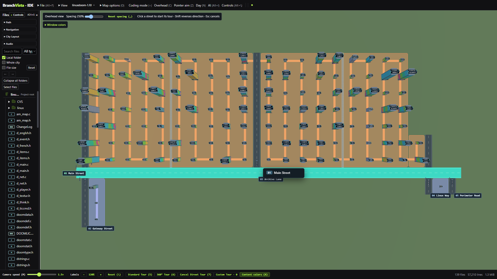
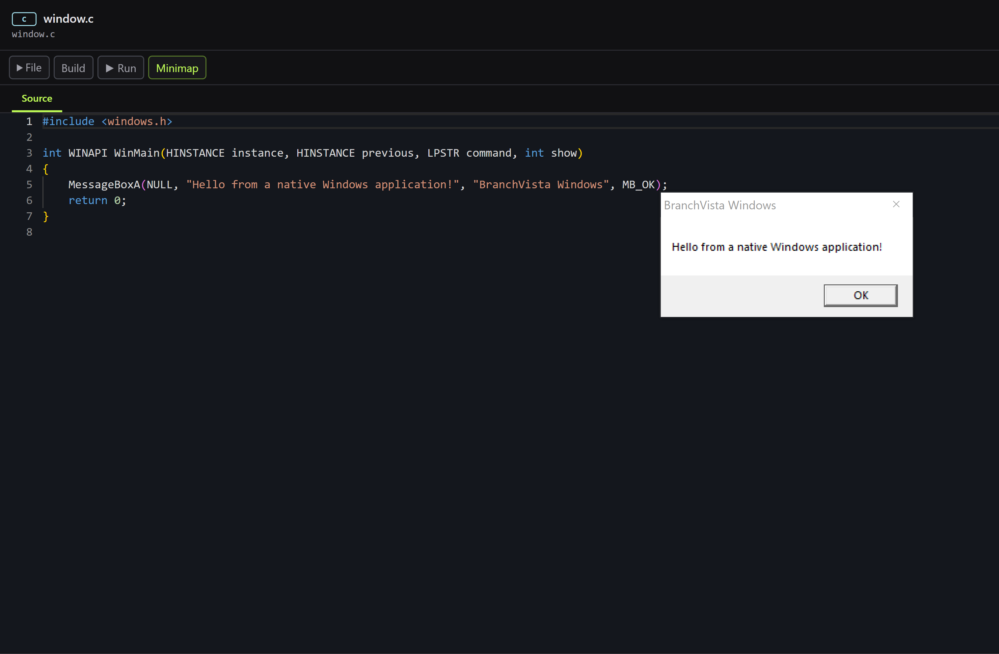
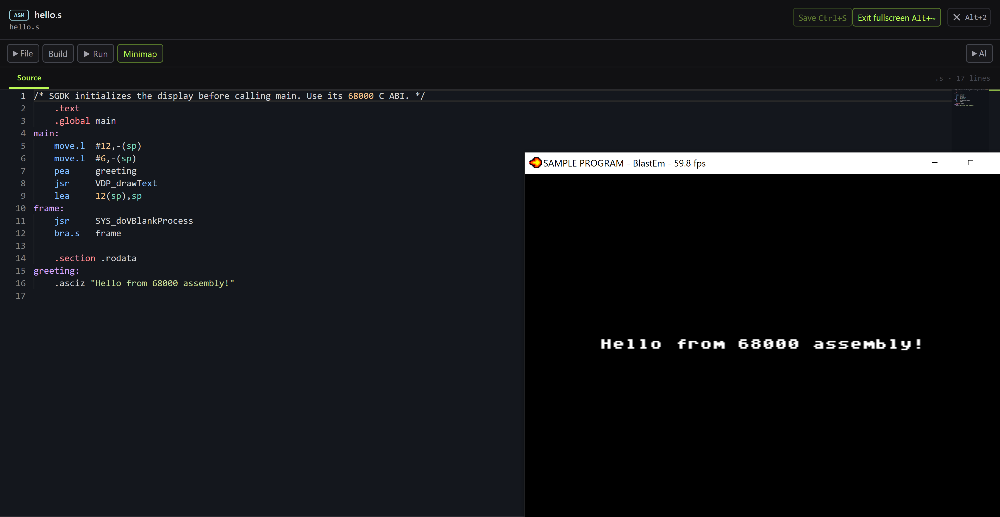
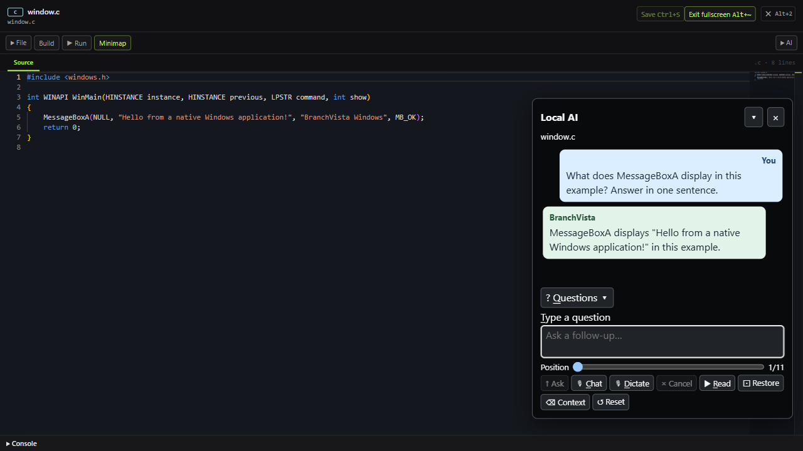
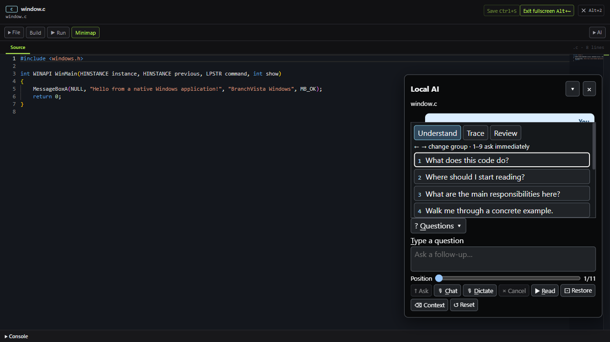

Walk through
the source.
BranchVista turns a local source tree into a 3D city. Fly over a project, follow a street, and open the file behind a building.
Watch the city toursCity tours
From above


Fullscreen editor


Build and run


The Run button launches a native Windows dialog.

BlastEm displays the greeting drawn by the Genesis C program.


The assembled ROM prints its greeting in the emulator.
Local AI in the editor
Ask about an open file, follow up by voice, or listen to a reply while you explore. BranchVista connects to a local model through Ollama.



